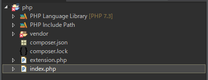
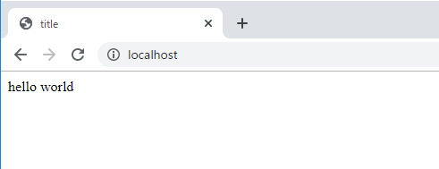
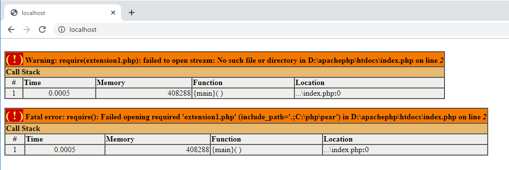
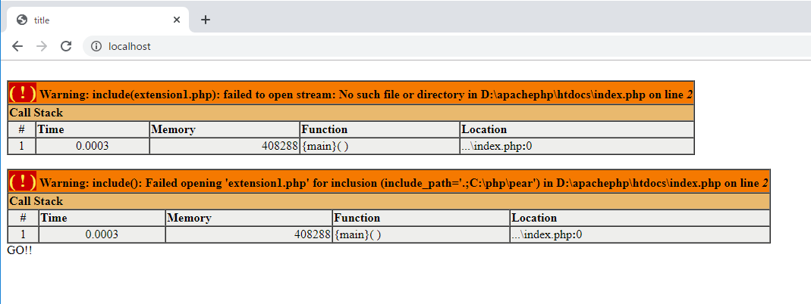
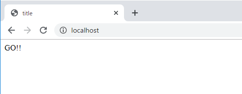
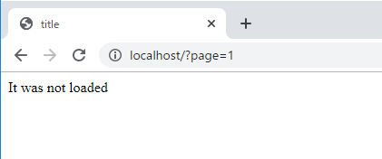
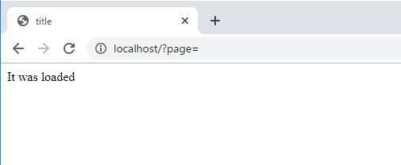
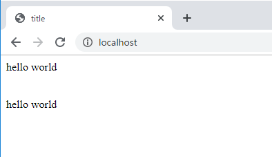

こんにちは。明月です。
プログラムプロジェクトを管理するようにはディレクトリやファイルの構成を設定することも重要な部分です。
例えば、Javaの場合はパッケージネームがディレクトリ構造でクラス名とファイル名を一致させておいてクラスを早く探せるように設定します。
C#の場合もnamespaceがディレクトリ構造でクラス名がファイル名と一致させます。
上のルールは必ずではないけど、できれば守らなければならないです。
PHPの場合は.phpがウェブページなのでクラス名とファイル名を一致することで少し難しい部分があります。でも、できれば合わせることは将来に可読性のため必要です。
そして、最近のプロジェクトは.phpで全開することではなく、.htaccessを利用してMVCモデルに構成するのでクラスようなファイル(.php)とビューファイル(.tpl)を分けることにしますね。
なので、phpもクラス名とファイル名、ディレクトリ名とnamespace名に分けることができます。
そうしたら２つのウェブページを生成して一つのresponseに作りましょう。
<?php
// extension.phpファイルを読み込む。
require 'extension.php';
// extension.phpの中にあるExtensionクラスを宣言する。
$obj = new Extension();
?>
<!DOCTYPE html>
<html>
<head><title>title</title></head>
<body>
<-- Extensionクラスの getData関数を呼出す。 -->
<?=$obj->getData()?>
</body>
</html>
<?php
// クラスファイルです。
class Extension {
private $data;
public function __construct() {
$this->data = "hello world";
}
public function getData() {
return $this->data;
}
}
?>


index.phpファイルとextension.phpファイルを生成しました。index.phpファイルで「require」関数を利用してextension.phpファイルを読込みました。
extension.phpファイルはクラスしかないので、ブラウザで「localhost/extension.php」に接続しても空ページが表示されます。
しかしindex.phpではExtensionクラスを宣言してgetData関数を呼出すので、「localhost/index.php」では結果が「hello world」が表示されますね。
そうすると「require」の使用方法に関しては理解しました。上のindex.phpで「require」キーワード代わりに「include」を入れても同じ結果ができます。
「require」と「include」の使用方法と結果は同じです。
でも、includeする時あるいはrequireする時にファイルがあるかどうかでエラーの差があります。
<?php
// 実際に存在しないファイルです。
require 'extension1.php';
?>
<!DOCTYPE html>
<html>
<head><title>title</title></head>
<body>
GO!!
</body>
</html>
上の場合はブラウザで「localhost/index.php」に接続するとエラーが発生します。

Fatalエラーなのでスクリプト解析が止まるのでbodyにある「GO!!」も文言が表示されないです。
<?php
// require代わりにincludeでextension1.phpを読み込む。
include 'extension1.php';
?>
<!DOCTYPE html>
<html>
<head><title>title</title></head>
<body>
GO!!
</body>
</html>

includeの場合はエラーではなく、警告(Warning)ですね。なので、スクリプトが止まらないので、最後「GO!!」メッセージまで表示されることを確認できます。
前述でエラーメッセージを設定する方法に関して説明したことがあります。Warningメッセージなのでメッセージが見えないようにするとincludeで宣言したページがなくてもエラーメッセージが表示されなくて続けてページが処理します。
link - [PHP] Fatal及びNotice,、Warningメッセージ処理する方法
<?php
// Warningのメッセージは表示しないように設定する。
error_reporting(E_ALL&~E_WARNING);
// 実際にファイルがないことをincludeする。
include 'extension1.php';
?>
<!DOCTYPE html>
<html>
<head><title>title</title></head>
<body>
GO!!
</body>
</html>

でも、エラーや警告の場合はただメッセージがでないように設定することで解決したことではないです。逆にエラーや警告を隠したら本当にエラーになる時に原因を調べることも難しいし、includeやrequireしたページが重要な部分だと思えばWarningだけではなく、requireで宣言してFATALのエラーが発生するようにした方が良いと思います。
その理由で「require」を使います。でも、「include」も必ずエラーではなく、動的要請する時には「include」が使います。
<?php
// GET方式(URLからパラメータの値を受取る)でpageの値でページを読み込む。
$pagename = 'extension'.$_GET["page"].'.php';
// 「@」を付けるとWarningが発生すれば「false」、正常なら「true」で処理する。
if(@include $pagename) {
echo "It was loaded";
} else {
echo "It was not loaded";
}
?>
<!DOCTYPE html>
<html>
<head><title>title</title></head>
<body></body>
</html>
上の例はincludeページをGET方式のパラメータで受け取ります。なので、ユーザから受取るパラメータで存在しないページがある可能性がありますね。

extension1.phpファイルは存在しないので「It was not loaded」メッセージがでます。

パラメータがない場合はextension.phpファイルを読み込むので「it was loaded」がでますね。
上の例でincludeを変わりにrequireを使うとFatalエラーが発生するので、上の処理ができないです。
ここで「@」を使いましたが説明します。
「@」の場合はページ内でWarningが発生する時にboolデータ(true or false)に受け取ります。
つまり、Warningが発生すると「false」、Warningが発生しないと「true」をリターンします。
「@」マークの場合はPHP内で宣言しない変数を参照することや0で割り算することやIOのファイル読み込み中でファイルが存在しないことなどでWarningが発生しますが、その時に使うとよいキーワードです。
includeとrequireの場合は各include_onceがあるしrequire_onceがあります。
この意味はソースの中で一回に呼出したら次は読み込まないようにするキーワードです。
<!DOCTYPE html>
<html>
<head><title>title</title></head>
<body>
<?php
// extension.phpが呼出したことがないので読み込む。
require_once 'extension.php';
?>
<br />
<?php
// 上でextension.phpが呼出したので、読み込まない。
require_once 'extension.php';
?>
<br />
<?php
// 上でrequireで呼出したけど、呼出したことがあるので、読み込まない。
include_once 'extension.php';
?>
<br />
<?php
// onceがないので、呼び出しした可否なしで読み込む。
include 'extension.php';
?>
</body>
</html>
<?php
echo "hello world";
?>

上の例を見ればonceが付けるとincludeやrequireの関係しなずに、呼び出しした可否で読み込むか込まないかを決めます。
つまりrequireで読み出しても、include_onceには読み込まないですね。
link - https://andy-carter.com/blog/difference-between-include-and-require-statements-in-php
- [PHP] Reflection - Variable編2020/02/01 03:00:00
- [PHP] Reflection - Method編2020/01/31 03:00:00
- [PHP] Reflection - Class編2020/01/30 03:00:00
- [PHP] エラーページ処理方法(追加: ob_cleanとdie関数使用方法)2020/01/29 03:00:00
- [PHP] 分散設定ファイル(.htaccess) 使用方法2020/01/28 03:00:00
- [PHP] データベース(mariaDB)を連結して使う方法2020/01/24 03:00:00
- [PHP] IOに関して2020/01/23 03:00:00
- [PHP] requireとinclude、そして「@」の使用方法2020/01/22 03:00:00
- [PHP] Fatal及びNotice,、Warningメッセージ処理する方法2020/01/19 03:00:00
- [PHP] xDebug設定する方法2020/01/18 03:00:00
- [PHP] $_SERVER, $GLOBALS, $_GET, $_POST, $_REQUEST, $_COOKIE, $_SESSION, $_FILES, $_ENV(getenv())2020/01/17 03:00:00
- [PHP] データ確認関数(var_dump, debug_zval_dump, print_r)2020/01/16 03:00:00
- [PHP] 例外処理(try ~ catch ~ finally)2020/01/15 03:00:00
- [PHP] 配列とリスト(list)2020/01/14 03:00:00
- [PHP] インタフェースと抽象クラス、クラス継承、parent、this2020/01/13 03:00:00
- [Java] 56. Web serviceのサーブレット(Servlet)で初期化作業(properties設定)2021/07/02 17:10:36
- [Java] 55. Spring frameworkに文字化けを解決する方法(Encoding設定)2021/06/30 16:37:16
- [Java] 54. Spring frameworkでWeb filterを使う方法2021/06/29 18:25:12
- [Java] 53. ウェブサービス(Web service)でエラーページを処理する方法2021/06/25 13:35:54
- [Design pattern] 1-3. ファクトリメソッドパターン(Factory method pattern)2021/06/23 19:45:37
- [Java] WebSocketでチャット履歴をローディングする方法2021/06/15 18:34:45
- [Java] WebSocketを利用してユーザ(サイト運用者)が他のユーザとチャットする方法2021/06/15 17:20:08
- [Design pattern] 1-2. ビルダーパターン(Builder pattern)2021/06/11 19:06:28
- [Design pattern] 1-1. シングルトンパターン(Singleton pattern)2021/06/09 19:40:05
- [Design Pattern] デザインパターンの紹介2021/06/08 20:42:36
- [Tools] Dbeaver(無料Sql queryブラウザツール)2021/04/28 18:26:49
- [Bootstrap] HTMLデザインのフレームワークのBootstrap紹介2020/07/30 19:06:36
- [Python] メール(smtplib)を送信する方法2020/07/27 18:38:43
- [Python] HttpConnection(requestsモジュール)でウェブサーバーで接続する方法2020/07/20 14:41:51
- [Python] Excel(openpyxl)を扱う方法2020/07/16 16:40:31